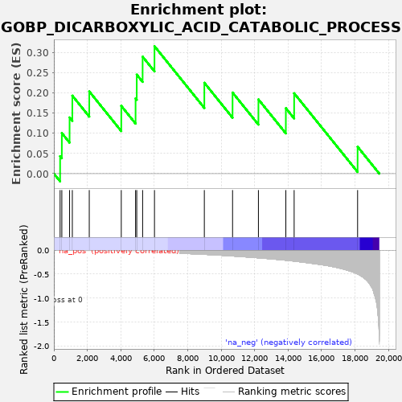
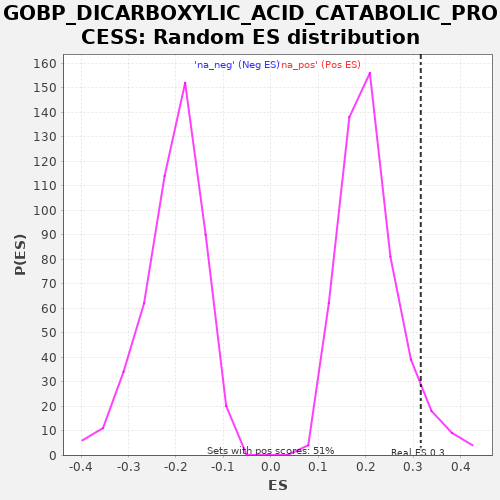

| | | Dataset | A_X_tradeoff |
| Phenotype | NoPhenotypeAvailable |
| Upregulated in class | na_pos |
| GeneSet | GOBP_DICARBOXYLIC_ACID_CATABOLIC_PROCESS |
| Enrichment Score (ES) | 0.31605315 |
| Normalized Enrichment Score (NES) | 1.516289 |
| Nominal p-value | 0.06066536 |
| FDR q-value | 0.7730797 |
| FWER p-Value | 1.0 |
Table: GSEA Results Summary

Fig 1: Enrichment plot: GOBP_DICARBOXYLIC_ACID_CATABOLIC_PROCESS
Profile of the Running ES Score & Positions of GeneSet Members on the Rank Ordered List
| SYMBOL | RANK IN GENE LIST | RANK METRIC SCORE | RUNNING ES | CORE ENRICHMENT | | 1 | ACOT4 | 373 | -0.002 | 0.0433 | Yes |
| 2 | GOT1 | 476 | -0.003 | 0.1006 | Yes |
| 3 | ASPA | 939 | -0.005 | 0.1393 | Yes |
| 4 | ACOT8 | 1104 | -0.006 | 0.1934 | Yes |
| 5 | GLUD1 | 2116 | -0.012 | 0.2038 | Yes |
| 6 | QPRT | 4029 | -0.025 | 0.1680 | Yes |
| 7 | DDO | 4884 | -0.032 | 0.1865 | Yes |
| 8 | ADHFE1 | 4954 | -0.033 | 0.2455 | Yes |
| 9 | MTHFS | 5305 | -0.037 | 0.2900 | Yes |
| 10 | GLUL | 6014 | -0.045 | 0.3161 | Yes |
| 11 | GAD2 | 8994 | -0.090 | 0.2253 | No |
| 12 | ACSF3 | 10681 | -0.124 | 0.2010 | No |
| 13 | GAD1 | 12227 | -0.162 | 0.1841 | No |
| 14 | ALDH1L1 | 13866 | -0.213 | 0.1623 | No |
| 15 | ALDH1L2 | 14362 | -0.231 | 0.1993 | No |
| 16 | GOT2 | 18155 | -0.501 | 0.0667 | No |
Table: GSEA details [plain text format]

Fig 2: GOBP_DICARBOXYLIC_ACID_CATABOLIC_PROCESS: Random ES distribution
Gene set null distribution of ES for GOBP_DICARBOXYLIC_ACID_CATABOLIC_PROCESS